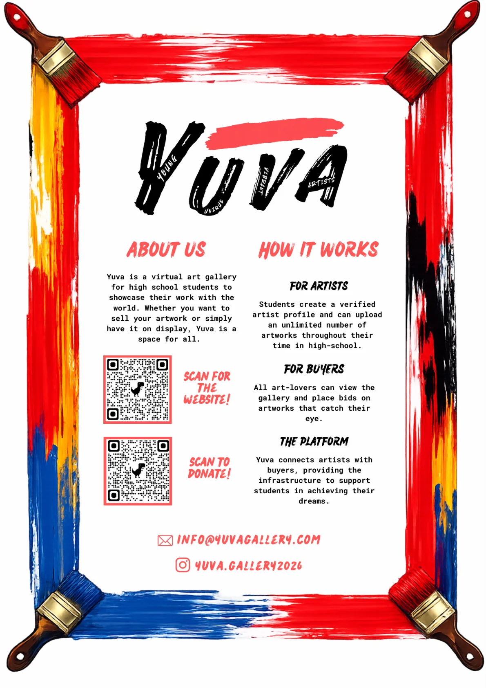
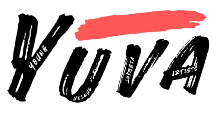
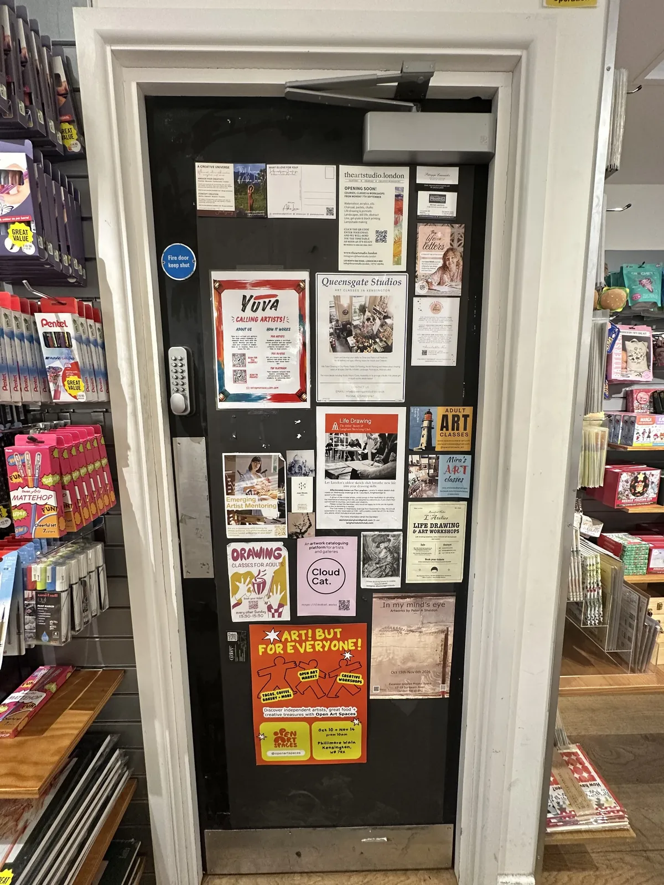

Yuva.
Making space for young artists.
I founded Yuva, a virtual art gallery that helps high-school students share their work with a wider audience and connect with potential buyers, while supporting a local art charity. What began as an idea about unseen paintings has grown into a platform accessed in 19 countries.

THE GALLERY CONCEPT
YOUNG · UNIQUE · VIBRANT · ARTISTSA place for student creativity to be seen, appreciated and supported.

CASS ART KENSINGTONIt began with paintings in a cupboard.
Art has always been a part of my life. One afternoon, while sorting through years of my own paintings, I realised how much time, effort and care had gone into work that was now tucked away, unseen. I started wondering how many other young artists had the same experience.
At school, I saw extraordinary creativity from students whose artwork rarely made it beyond classrooms or bedrooms. I wanted to create a more rewarding way to share what they had made, give their work an audience and celebrate the people behind it.
My interest in technology gave me a way to act on that idea. I created Yuva — meaning “young” in Sanskrit — to bring artists, art lovers and potential buyers together, while helping make creative resources more accessible to children who might otherwise miss out.
Every young artist deserves a platform to share their work with the world.
Technology as a bridge between artists and audiences.
Yuva was designed as a virtual gallery where high-school artists can create profiles, upload their work and reach people interested in discovering or buying student art. Instead of letting paintings remain unseen, the platform offers a space to showcase both the artwork and the artist.
Building and launching Yuva brought together digital product development, communications and entrepreneurship with a goal that goes beyond the website itself: making creative opportunity more accessible.
Countries from which Yuva has been accessed.
Supporting visibility, discovery and opportunities for younger creators.
Raising money for a local art charity and widening access to creative resources.
Taking Yuva beyond the screen.
I am collaborating with Cass Art Kensington to organise an art exhibition that will give student artists another way to share their work with a public audience. The partnership is part of my wider ambition to connect digital discovery with real-world creative opportunities.
The Yuva poster pictured below was displayed at Cass Art Kensington. The exhibition is in development — it has not yet taken place.
Bringing student art into a physical space.
From an online platform to a potential exhibition: the aim is to help student artists reach more people, develop confidence and feel that their creative work deserves to be seen.
Exhibition being organisedVisit Yuva to see the gallery itself.
Discover the platform and follow its work with student artists.